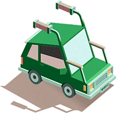

Scrollez vers le bas
pour atteindre le point B
pour atteindre le point B

Vous trouvez ça lent ?
Malheureusement ce métro n'est pas accessible
Malheureusement ce métro n'est pas accessible

Oups ! Vous avez raté le bus.
Le prochain est dans 30 minutes.
Pas le temps d'attendre. Continuez
Le prochain est dans 30 minutes.
Pas le temps d'attendre. Continuez

Vous êtes fatigués ? Impossible de sauter
dans un taxi. Allez Hop ! Dernière ligne droite.
dans un taxi. Allez Hop ! Dernière ligne droite.

Aïe !!! Vous êtes ralenti par une crampe.
Courage. Plus que 200 mètres.
Courage. Plus que 200 mètres.

C'était long, hein ?
Et oui, en fauteuil roulant,
c'est moins rapide qu'en voiture.
Et oui, en fauteuil roulant,
c'est moins rapide qu'en voiture.

